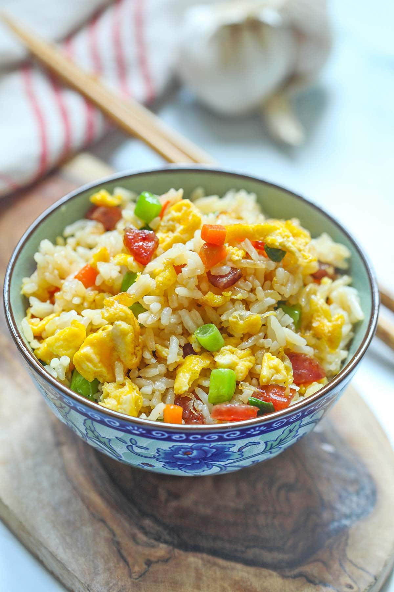

Home
Chinese Fried Rice

Description
Chinese fried rice is one of the classic yet beloved food in Malaysia.
Not only is it easy to cook, it also tastes amazing.
Follow the recipe below to make your asian parents impressed!
Ingredients
- Leftover White Rice
- Eggs
- Garlic
- Chinese sausage
- Soy sauce
- Ground white pepper
Steps
- Heat up wok or frying pan, add garlic and stir fry, following with chinese sausage.
- Next, add the mixed vegetables and rice to wok.
- Add soy sauce to the mixture.
- Now, push the rice aside, add some more oil and break an egg to the wok.
- Continuously stir and add suitable amount of salt and pepper to your liking.
- Pour the chinese fried rice to plate and serve.
Reference
Rasa Malaysia